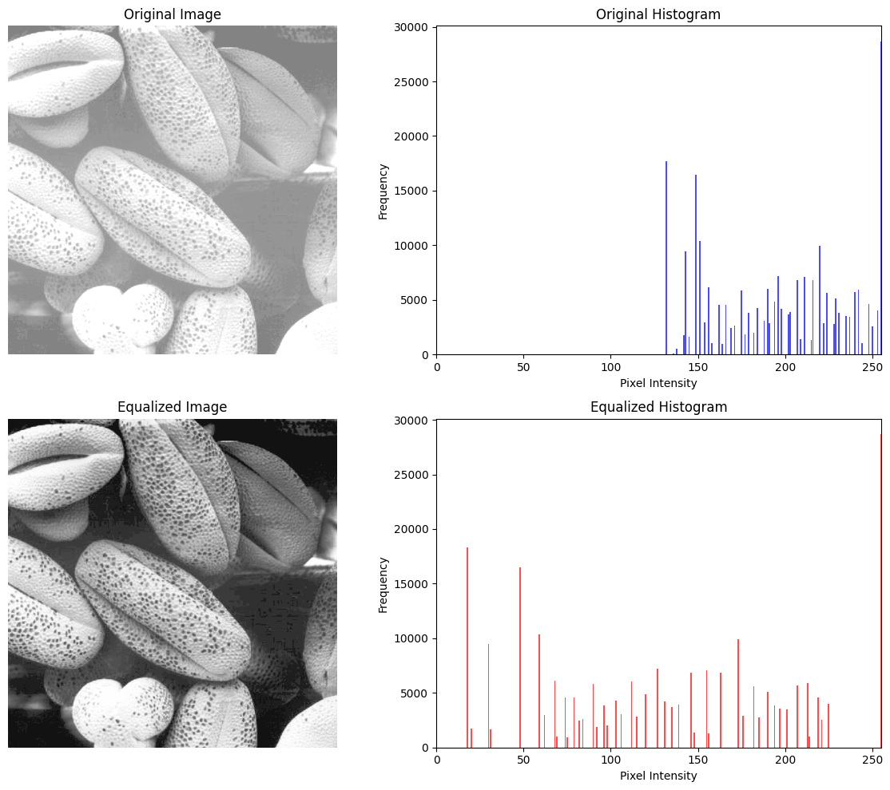
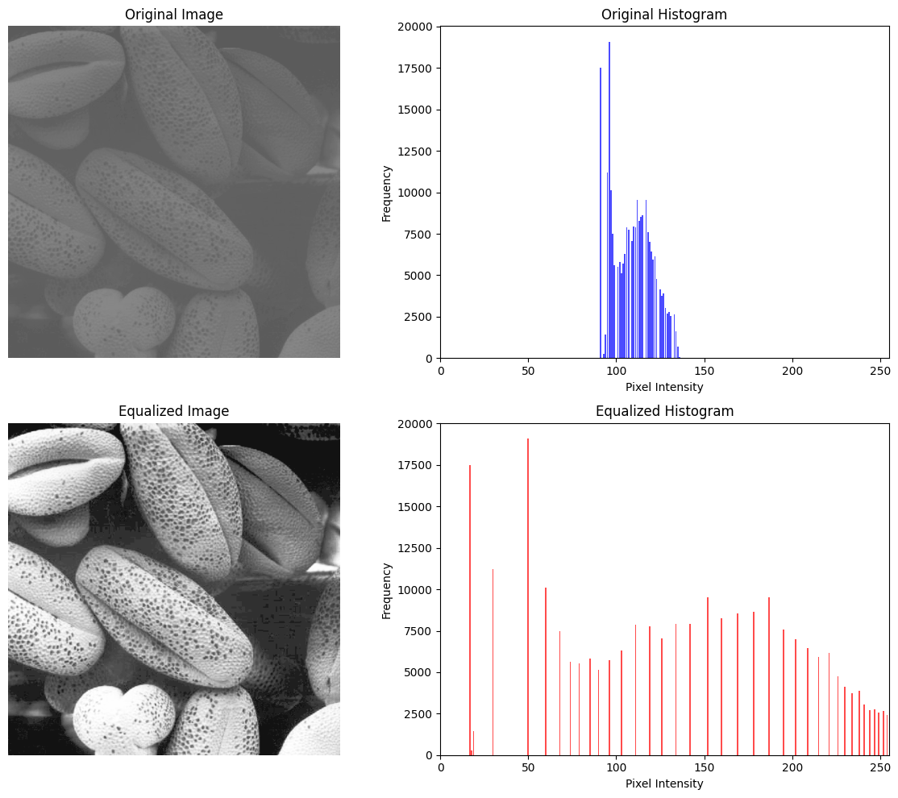
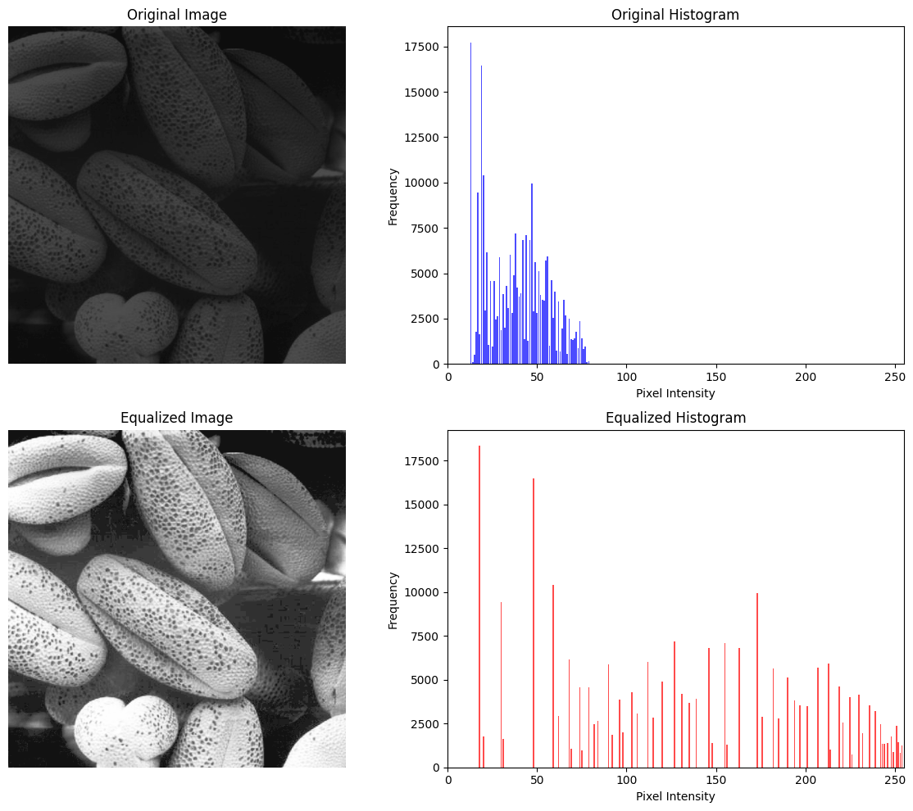
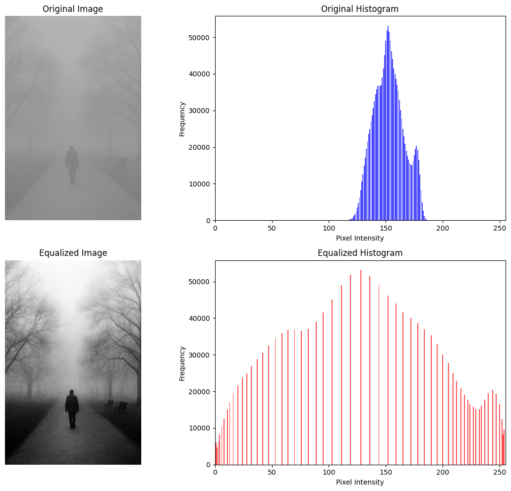

Part 1: Perspective and Orthographic Projections
The image on the left was taken from up close (perspective) and the image on the right was taken from farther back while zooming in, mimicking an orthographic projection. In the perspective projection, the angle between the red lines and the green lines is greater than the angle in the orthographic projection. This shows that the lines in the orthographic projection converge noticeably less than in the perspective.
Part 2: Histogram Manipulation & Linear Filtering
Question 1: Histogram Equalization on Provided Images
  Question 2: Histogram Equalization on Own Images
The original image's histogram is dense in the mid-ranges of pixel intensity, with very little, if any, diversity. Equalization expands the range of pixel intensities to the full 0 - 255 range, which significantly improves the image. The silhouette is more clear, the details in the trees and background are more clear, and no details are lost. The quality is much better.
Question 4: Derivative of Gaussian
Naive Approach (Two Steps)
Direct Approach (One step)
Comparison
The two step approach vs the one step approach are nearly identical. They are equivalent because convolution has the associative property. However, the blacks and whites are inverted between the one step and two step approach. I believe this is because how I took the derivative. This doessn't affect the quality of information about the edges in the image.
Question 5: Image Sharpening
As α increases, the images get more sharp, it acts as a sharpening factor. α = 5 was about the most sharpening I could get without seeing too many negative affects. The landscope image I chose to sharpen looks better with the more pronounced edges of the mountains and bushses. The dark night image looks worse with sharpening, as the sharpening just adds noise to the image without any increase in quality.
Part 3: Anisotropic Diffusion
Question 1: Implementation of Anisotropic Diffusion


As the number of iterations increases, the images become more smoothed overall. It simply applies the diffusion that many times. Eventually, even with a small K value, the edges will blur.
Question 2: Comparison with Gaussian Smoothing